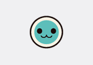
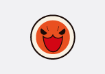
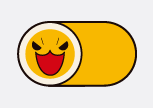
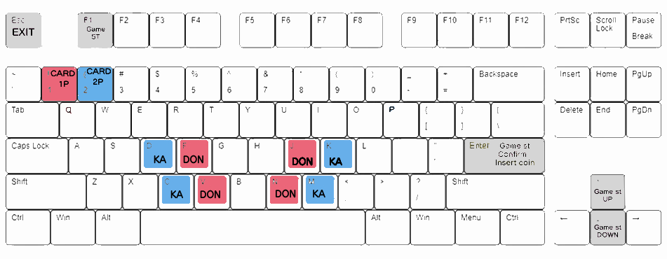
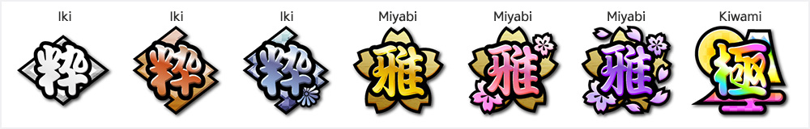
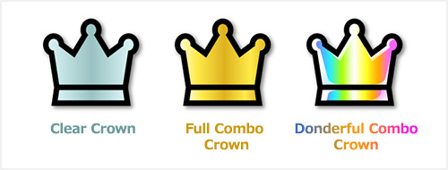

<!DOCTYPE html>
<html lang="kr">
<head>
  <meta charset="UTF-8">
  <title></title>
</head>
<body>
  <script>
    function getIpCountry() {
    }

    const userCountry = getIpCountry();

    if (userCountry === 'jp') {
      window.location.href = 'https://taikoplus.github.io/jp';
    } else if (userCountry === 'kr') {
      window.location.href = 'https://taikoplus.github.io/kr';
    } else {
      window.location.href = 'https://taikoplus.github.io/en';
    }
  </script>
</body>
</html>
<!-- saved from url=(0033)https://taiko.nojiiro.net/jp/ -->
<html lang="ja" class="js skrollr skrollr-desktop"><head prefix="og: http://ogp.me/ns# fb: http://ogp.me/ns/fb# article: http://ogp.me/ns/article#"><meta http-equiv="Content-Type" content="text/html; charset=UTF-8">
<meta http-equiv="Content-Security-Policy" content="script-src &#39;self&#39; &#39;unsafe-eval&#39; &#39;unsafe-inline&#39; https://www.googletagmanager.com/ https://product.bandainamco-am.co.jp/ http://bandainamco-am.co.jp/ https://www.google-analytics.com/ https://cdn-au.onetrust.com/ https://www.youtube.com/ https://platform.twitter.com/; style-src &#39;self&#39; &#39;unsafe-inline&#39; https://fonts.googleapis.com/ http://bandainamco-am.co.jp/;">

<meta name="viewport" content="width=device-width,user-scalable=no,maximum-scale=1,initial-scale=1.0">
<title>플레이 방법 | 태고의 달인 니지이로 플러스 버전 | EXPLUS</title>
<meta name="keywords" content="太鼓の達人NC","Taiko NC">
<meta name="description" content="Taiko no Tatsujin Unofficial Server.">
<meta property="og:type" content="website">
<meta property="og:title" content="Taiko no Tatsujin Unofficial Server.">
<meta property="og:site_name" content="Taiko no Tatsujin Unofficial Server.">
<meta property="og:description" content="Taiko no Tatsujin Unofficial Server.">
<link rel="shortcut icon" href="./kr/nc_icon.ico">
<link rel="apple-touch-icon" href="./kr/nc_icon.ico">
<!--[if lte IE 8]>
<script src="js/html5shiv.js" type="text/javascript"></script>
<![endif]-->
<link rel="stylesheet" href="./kr/basic-1.0.css">
<link rel="stylesheet" href="./kr/top.css">
<link rel="stylesheet" href="./kr/slick.css">
<link rel="stylesheet" href="./kr/slick-theme.css">
<link rel="stylesheet" href="./kr/jquery.fancybox.css">
<script async="" src="./kr/gtm.js"></script><script src="./kr/jquery.min.js"></script>
<script src="./kr/common.min.js"></script>
<script src="./kr/respond.js"></script>
<script src="./kr/slick.min.js"></script>
<script src="./kr/jquery.fancybox.min.js"></script>
<meta name="google-site-verification" content="wqqK-l9vwoDXn16ILZQ1st6nFNeCK1jw0Bbp_PQOWbA">
<!-- Google Tag Manager -->
<script>(function(w,d,s,l,i){w[l]=w[l]||[];w[l].push({'gtm.start':
new Date().getTime(),event:'gtm.js'});var f=d.getElementsByTagName(s)[0],
j=d.createElement(s),dl=l!='dataLayer'?'&l='+l:'';j.async=true;j.src=
'https://www.googletagmanager.com/gtm.js?id='+i+dl;f.parentNode.insertBefore(j,f);
})(window,document,'script','dataLayer','GTM-KFKT6GC');</script>
<!-- End Google Tag Manager -->
<script charset="utf-8" src="./kr/timeline.e108540dddc96e4b707f5cf259a582d7.js"></script></head>

<body id="home" data-0="background-position:center 0px;" data-100000="background-position:center -50000px;" class="skrollable skrollable-between" style="background-position: center -0.5px;">
  <!-- Google Tag Manager (noscript) -->
<noscript><iframe src="https://www.googletagmanager.com/ns.html?id=GTM-KFKT6GC"
height="0" width="0" style="display:none;visibility:hidden"></iframe></noscript>
<!-- End Google Tag Manager (noscript) -->
 

<center>
<a href="en.html"><br></a><div id="mv">
		
          <h3><span>음표 종류</span></h3>
            <br><span>빨간 음표는<br>북 면을 두드리자</span><br><br>
            <br><span>파란 음표는<br>북 테를 두드리자</span><br><br>
          <br><span>크고 빨간 음표는<br>북 면을 강하게 두드리자</span><br><br>
          <br><span>크고 파란 음표는<br>북 테을 강하게 두드리자</span><br><br>
           <br><span>노란 음표는<br>북 면을 연타하자</span><br><br>
           <br><span>크고 노란 음표는<br>북 면을 강하게 연타하자</span><br><br>
           <br><span>풍선 음표는<br>풍선이 터질 때까지 연타하자</span><br><br>
            <br><span>손잡기 음표가 나타나면<br>둘이서 함께 두드리자!</span><br><br>
          <br><span>박 음표는<br>박에 쓰인 숫자만큼 연타하자!</span><br><br>
          </ul><br>
		            <h3><span>키보드로 플레이 시</span></h3>
				<br><span>...</span><br><br>
            <br><span>빨간 음표는<br> 1플레이어 [F][J] / 2플레이어 [V][N] 키를 누르자.</span><br><br>
            <br><span>파란 음표는<br>1플레이어 [D][K] / 2플레이어 [C][M] 키를 누르자.</span><br><br>
          <br><span>크고 빨간 음표는<br>1플레이어 [F][J] / 2플레이어 [V][N] 키를 동시에 누르자.</span><br><br>
          <br><span>크고 파란 음표는<br>1플레이어 [D][K] / 2플레이어 [C][M] 키를 동시에 누르자.</span><br><br>
           <br><span>노란 음표는 <br>1플레이어 [D][F][J][K] / 2플레이어 [C][V][N][M] 키를 연속으로 두드리자</span><br><br>
           <br><span>크고 노란 음표는 <br>1플레이어 [D][F][J][K] / 2플레이어 [C][V][N][M] 키를 연속으로 두드리자</span><br><br>
           <br><span>풍선 음표는<br>1플레이어 [F][J] / 2플레이어 [V][N] 키를 풍선이 터질때까지 연속으로 누르자</span><br><br>
            <br><span>손잡기 음표가 나타나면<br>둘이서 함께 누르자!</span><br><br>
          <br><span>박 음표는<br>박에 쓰인 숫자만큼 연속으로 누르자!</span><br><br>
          </ul><br>
        </section>
<h3><span>타이밍을 맞춰서 북을 두드리자</span></h3>
            <p class="left"></p>
연주 중 표시되는 "얼쑤", "좋다", "에구"는 음표가 테두리에서 벗어나지 않고 얼마나 정확히 연주되었는지를 판정하는 표시입니다.<br>
완벽한 타이밍으로 연주하면 "얼쑤",.<br>
조금 벗어나면 "좋다", 크게 벗어나면 "에구"로 판정됩니다.<br>
고득점을 얻으려면 "얼쑤" 판정을 받도록 타이밍에 맞춰 연주하세요.<br>
          </div>

일정 스코어를 넘으면 스코어 랭크를 획득할 수 있습니다.<br>
스코어 랭크는 총 7단계가 있으며, 粋【이키】, 雅【미야비】, 極【기와미】 등의 종류가 있습니다.<br>
하기 화면에서 오른쪽일수록 상위 랭크를 의미합니다.<br>
</p>
          </div>          
또한 곡을 클리어하면 클리어 왕관,<br>
풀 콤보로 클리어하면 풀 콤보 왕관이 표시됩니다.<br>
모든 음표를 "얼쑤"로 연주하면 동더풀 콤보 왕관이 됩니다.<br>
<br>
          </div>  
          <div class="bnps"<br>
Donder Plus Account 를 사용해 플레이하면<br>
종합 성적 패널에서 획득한 스코어 랭크나 왕관<br>
목록을 확인할 수 있습니다.<br>
</p>
<a href="https://taikoplusasia.blogspot.com" target="_blank">
<a href="kr-dl.html" target="_blank">		      
        </ul>
        <p id="ptop"><a href="kr-how.html">PAGE TOP</a></p>
This unofficial simulator is unaffiliated with BANDAI NAMCO.<br>
Game System From ©Bandai Namco Entertainment Inc.<br>
Custom Patch From EXPLUS<br>

</a>